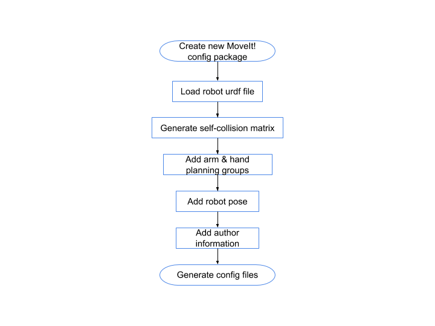
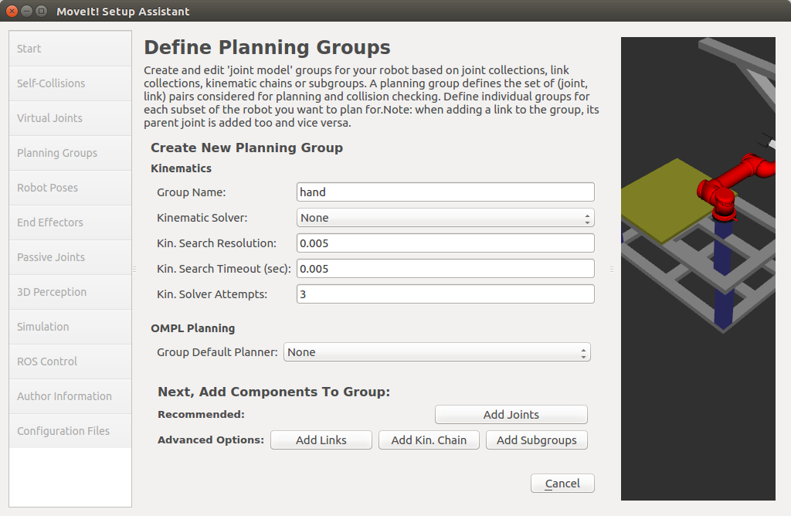
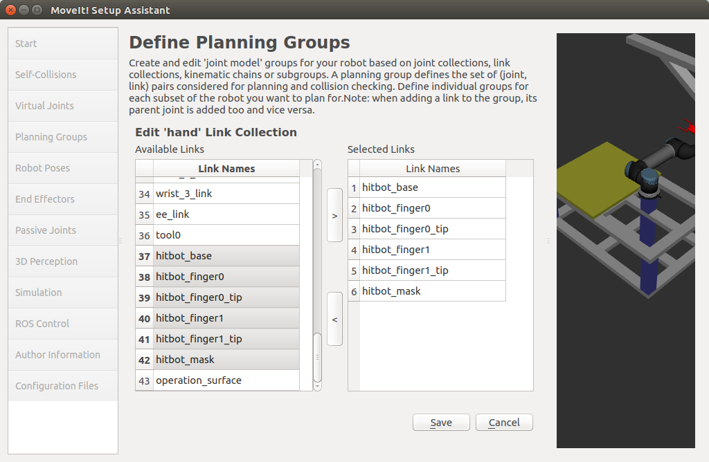
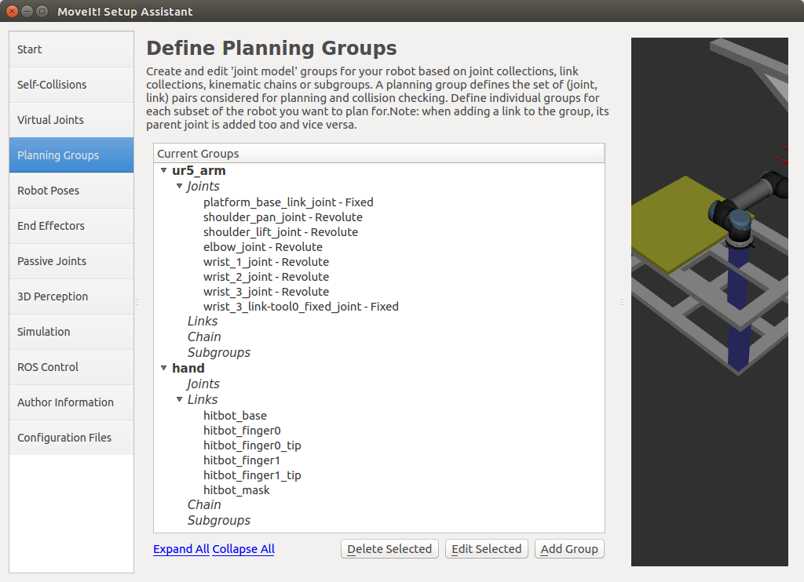
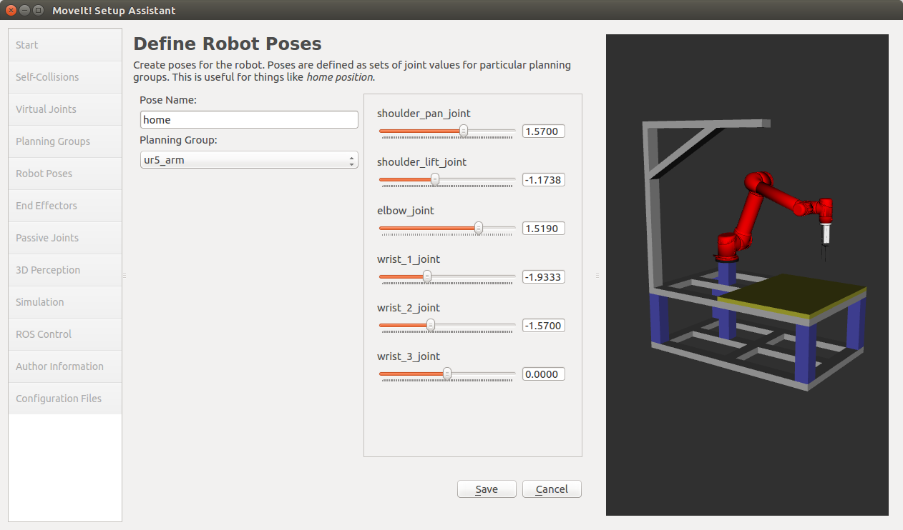

2. MoveIt! Congiure¶
MoveIt! config package is used to bring up the MoveIt! motion planning, perception and pick place pipeline.
If you have the ur5_hitbot_ilc_platform_moveit_config package already git-cloned from the Getting Started section,
don’t change anything in this package. This is the MoveIt! config package we created previously,
you can refer to this package when you meet error in the rest of the handson.
Next, we will show you how to create the same config package.
2.1 Start MoveIt! Setup Assistant:¶
cd ~/ws_handson
source devel/setup.bash
roslaunch moveit_setup_assistant setup_assistant.launch
The operation flow in this section will be:
2.2 Create new MoveIt! config package:¶
Click on the Create New MoveIt! Configuration Package button to on the Start screen:
2.3 Load urdf file:¶
Click on the browse button and navigate to the ur5_hitbot_with_ilc_platform.urdf.xacro file in the
moveit_handson package. (this file gets installed in
~/ws_handson/src/moveit_handson/handson_description/urdf/ur5_hitbot_with_ilc_platform.urdf.xacro.)
Choose that file and then click Load Files. The Setup Assistant will load the files (this might take a few seconds)
and present you with this screen:
2.4 Generate self-collision matrix:¶
Click on the Self-Collisions pane selector on the left-hand side and click on the Generate Collision Matrix button.
The Setup Assistant will work for a few second before presenting you the results of its computation in the main table.
2.5 Virtual joints:¶
Virtual joints are used primarily to attach the robot to the world. Since the UR5 robot is already attached to the platform and the platform is attached to the world in the loaded urdf file, there is no need to add virtual joints.
2.6 Add planning groups:¶
- Click on the
Planning-Groupspanel selector: - Click on
Add Groupbutton to add arm group: - We will first add UR5 arm as a planning group:
- Enter
Group Nameas “ur5_arm” - Choose
kdl_kinematics_plugin/KDLKinematicsPluginas the kinematics solver. - Let
Kin. Search ResolutionandKin. Search Timeoutstay at their default values.
- Enter
- Now, click on the
Add Jointsbutton:- Choose platform_base_link_joint, shoulder_pan_joint, shoulder_lift_joint, elbow_joint,
wrist_1_joint, wrist_2_joint, wrist_3_joint and wrist_3_link-tool0_fixed_joint
from the left
Available Jointslist. Add them to the rightSelected Jointslist. ClickSavebutton to save the selected group:
- Choose platform_base_link_joint, shoulder_pan_joint, shoulder_lift_joint, elbow_joint,
wrist_1_joint, wrist_2_joint, wrist_3_joint and wrist_3_link-tool0_fixed_joint
from the left
- Now, the screen should be like this:
Click
Add Groupbutton again to add the end-effector group.Note
you will do this using a different procedure than adding the arm
Enter
Group Nameas “hand”Let
Kin. Search ResolutionandKin. Search Timeoutstay at their default values.Click on the
Add Linksbutton.Choose “hitbot_base”, “hitbot_mask”, “hitbot_finger0”, “hitbot_finger0_tip”, “hitbot_finger1” and “hitbot_finger1_tip”, and add them to the list of
Selected Linkson the right hand side.Click
SaveFinally, it would be like this:

2.7 Add robot poses:¶
- Click on the
Robot Posespanel - Click
Add Posebutton - Set “home” as
Pose Name - Choose “ur5_arm” as
Planning Group- Set “shoulder_pan_joint” as “1.57”
- Set “shoulder_lift_joint” as “-1.1738”
- Set “elbow_joint” as “1.5190”
- Set “wrist_1_joint” as “-1.9333”
- Set “wrist_2_joint” as “-1.57”
- Set “wrist_3_joint” as “0.0”
- Click
Savebutton to save the pose
2.8 Label end-effectors:¶
- Click on the
End Effectorspanel. - Click
Add End Effector. - Choose “hand” as the
End Effector Namefor the gripper. - Select “hand” as the
End Effector Group. - Select “tool0” as the
Parent Linkfor this end-effector. - Leave
Parent Groupblank. - Click
Save.
Note
The screens of Passive Joints, 3D Perception, Simulation and ROS Control can be skipped, they are not necessary right now.
The passive joints are the unactuated joints of the robot,
since UR5 doesn’t have such kind of joints, so the Passive Joints panel will be skipped.
The 3D Perception is used to config the parameters of octomap by using a 3D sensor,
such as RGBD cameras, stereo cameras or laser scanners. In this handson, we will skip this.
The Simulation will add necessary tags in the urdf file,
so that the physics of the robot will be simulated in Gazebo.
Since we have already added these tags manually, so this step can be skipped.
Since the handson will be implemented mainly in a simulation environment.
You can also skip the ROS Control panel, which is used to config the controller
parameters for real robot execution.
2.9 Author information:¶
Click on the Author Information panel. Enter your name and email address.
2.10 Generate configuration files:¶
- Click on the Configuration Files panel.
- In the
Configuration Package Save Path, browse to the file location ~/ws_handson/src/moveit_handson/, and input handson_moveit_config as your package name. - Click on the
Generate Package button. - Click
Exit Setup Assistant. Find your moveit config package in ~/ws_handson/src/moveit_handson/handson_moveit_config.
2.11 Set initial pose to fake_controllers.yaml¶
Set “home” pose as the initial pose for the simulation: Open ~/ws_handson/src/moveit_handson/handson_moveit_config/config/fake_controllers.yaml with any editor, add the following lines to the end of the file, save and close:
initial:
- group: ur5_arm
pose: home
4.12 Add RvizVisualToolsGui:¶
Open ~/ws_handson/src/moveit_handson/handson_moveit_config/launch/moveit.rviz,
add following lines to the subitems of Panels:
- Class: rviz_visual_tools/RvizVisualToolsGui
Name: RvizVisualToolsGui
so that it would look like:
Panels:
- Class: rviz/Displays
Help Height: 84
Name: Displays
Property Tree Widget:
Expanded: ~
Splitter Ratio: 0.742560029
Tree Height: 330
- Class: rviz/Help
Name: Help
- Class: rviz/Views
Expanded:
- /Current View1
Name: Views
Splitter Ratio: 0.5
- Class: rviz_visual_tools/RvizVisualToolsGui
Name: RvizVisualToolsGui
Still in ~/ws_handson/src/moveit_handson/handson_moveit_config/launch/moveit.rviz,
add the following lines to the subitems of Displays:
- Class: rviz/MarkerArray
Enabled: true
Marker Topic: /rviz_visual_tools
Name: MarkerArray
Namespaces:
Text: true
Queue Size: 100
Value: true
so that it would look like:
Visualization Manager:
Class: ""
Displays:
- Class: rviz/MarkerArray
Enabled: true
Marker Topic: /rviz_visual_tools
Name: MarkerArray
Namespaces:
Text: true
Queue Size: 100
Value: true
- Alpha: 0.5
Cell Size: 1
Class: rviz/Grid
Color: 160; 160; 164
Enabled: true
Line Style:
Line Width: 0.03
Value: Lines
Name: Grid
Normal Cell Count: 0
Offset:
X: 0
Y: 0
Z: 0
...